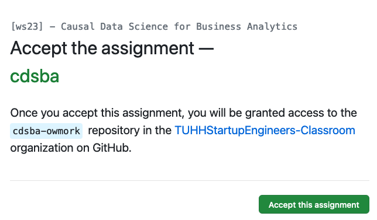
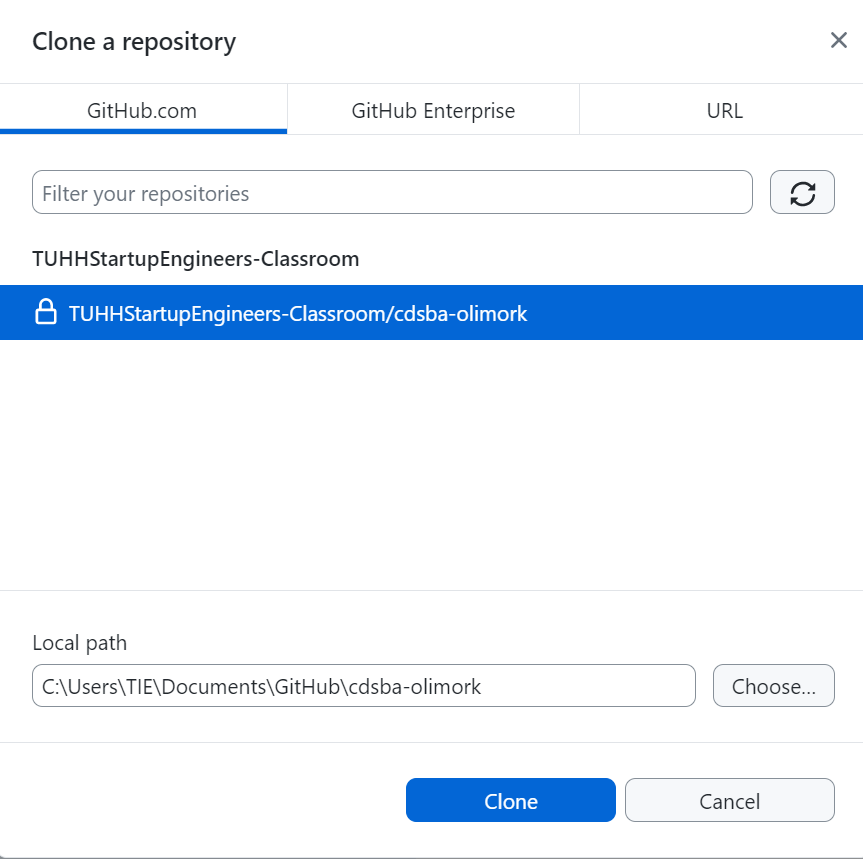
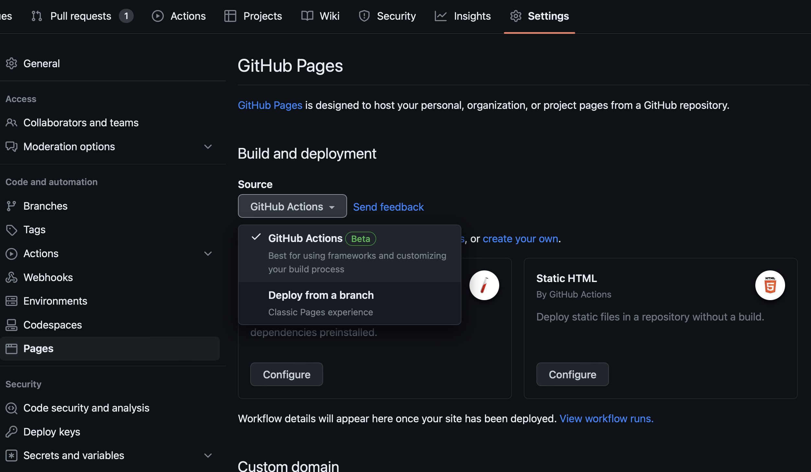
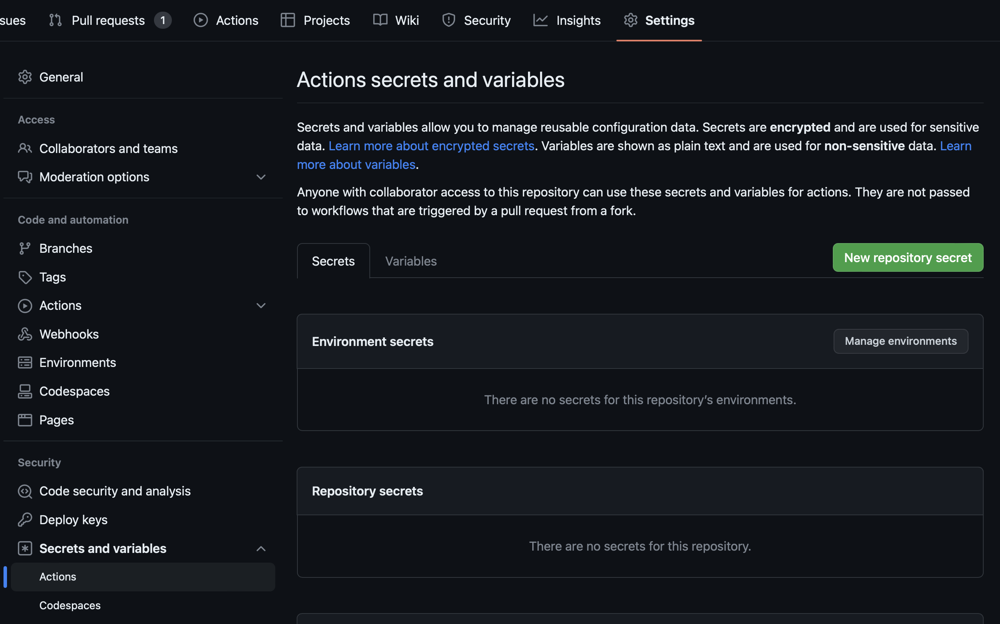
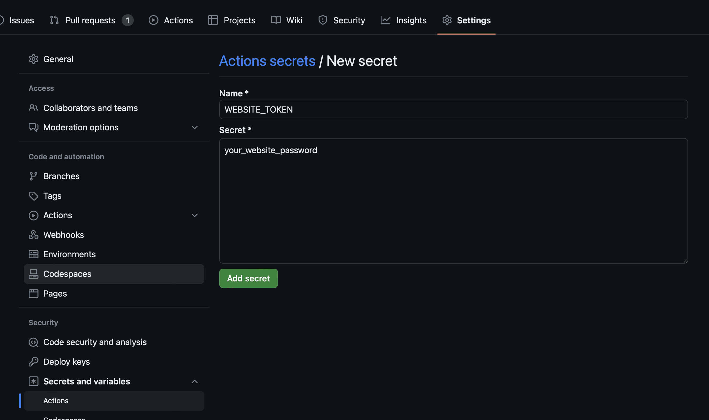
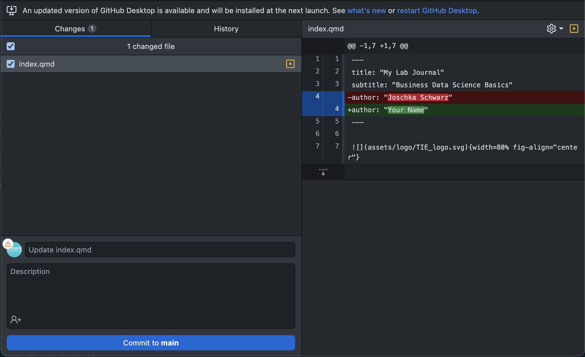
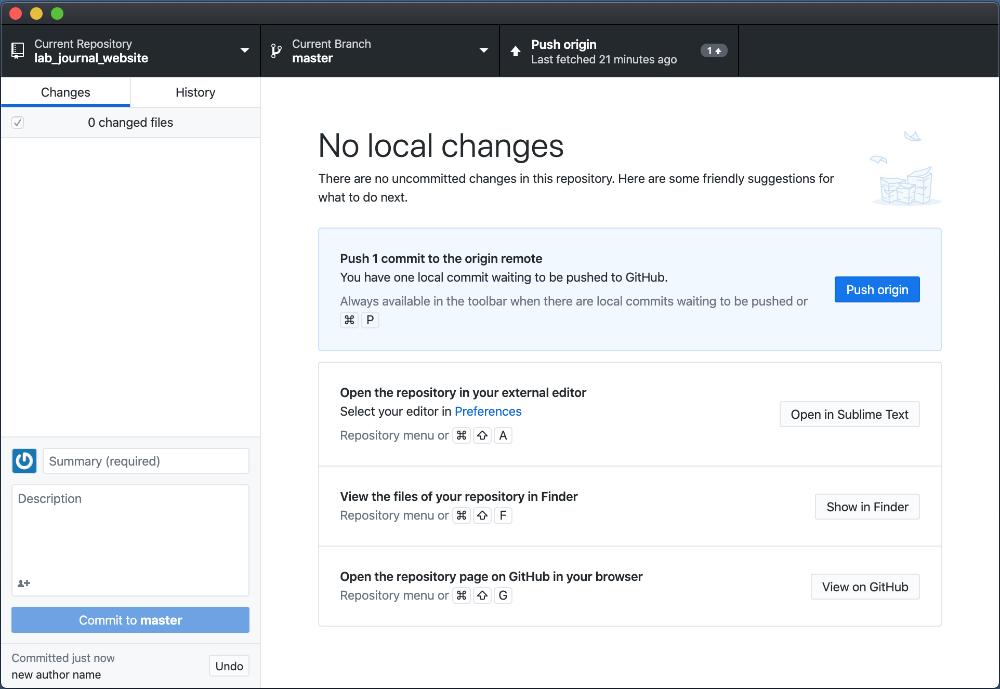

<!DOCTYPE html>
<html xmlns="http://www.w3.org/1999/xhtml" lang="en" xml:lang="en"><head>

<meta charset="utf-8">
<meta name="generator" content="quarto-1.3.450">

<meta name="viewport" content="width=device-width, initial-scale=1.0, user-scalable=yes">


<title>CAUSAL DATA SCIENCE FOR BUSINESS ANALYTICS - Submission via GitHub Classroom</title>
<style>
code{white-space: pre-wrap;}
span.smallcaps{font-variant: small-caps;}
div.columns{display: flex; gap: min(4vw, 1.5em);}
div.column{flex: auto; overflow-x: auto;}
div.hanging-indent{margin-left: 1.5em; text-indent: -1.5em;}
ul.task-list{list-style: none;}
ul.task-list li input[type="checkbox"] {
  width: 0.8em;
  margin: 0 0.8em 0.2em -1em; /* quarto-specific, see https://github.com/quarto-dev/quarto-cli/issues/4556 */ 
  vertical-align: middle;
}
</style>


<script src="../site_libs/quarto-nav/quarto-nav.js"></script>
<script src="../site_libs/quarto-nav/headroom.min.js"></script>
<script src="../site_libs/clipboard/clipboard.min.js"></script>
<script src="../site_libs/quarto-search/autocomplete.umd.js"></script>
<script src="../site_libs/quarto-search/fuse.min.js"></script>
<script src="../site_libs/quarto-search/quarto-search.js"></script>
<meta name="quarto:offset" content="../">
<link href="../images/favicon_cds_16x16.png" rel="icon" type="image/png">
<script src="../site_libs/quarto-html/quarto.js"></script>
<script src="../site_libs/quarto-html/popper.min.js"></script>
<script src="../site_libs/quarto-html/tippy.umd.min.js"></script>
<script src="../site_libs/quarto-html/anchor.min.js"></script>
<link href="../site_libs/quarto-html/tippy.css" rel="stylesheet">
<link href="../site_libs/quarto-html/quarto-syntax-highlighting-dark.css" rel="stylesheet" id="quarto-text-highlighting-styles">
<script src="../site_libs/bootstrap/bootstrap.min.js"></script>
<link href="../site_libs/bootstrap/bootstrap-icons.css" rel="stylesheet">
<link href="../site_libs/bootstrap/bootstrap.min.css" rel="stylesheet" id="quarto-bootstrap" data-mode="dark">
<script src="../site_libs/quarto-contrib/glightbox/glightbox.min.js"></script>
<link href="../site_libs/quarto-contrib/glightbox/glightbox.min.css" rel="stylesheet">
<link href="../site_libs/quarto-contrib/glightbox/lightbox.css" rel="stylesheet">
<script src="../site_libs/quarto-contrib/iconify-1.0.7/iconify-icon.min.js"></script>
<script id="quarto-search-options" type="application/json">{
  "location": "navbar",
  "copy-button": false,
  "collapse-after": 3,
  "panel-placement": "end",
  "type": "overlay",
  "limit": 20,
  "language": {
    "search-no-results-text": "No results",
    "search-matching-documents-text": "matching documents",
    "search-copy-link-title": "Copy link to search",
    "search-hide-matches-text": "Hide additional matches",
    "search-more-match-text": "more match in this document",
    "search-more-matches-text": "more matches in this document",
    "search-clear-button-title": "Clear",
    "search-detached-cancel-button-title": "Cancel",
    "search-submit-button-title": "Submit",
    "search-label": "Search"
  }
}</script>


<link rel="stylesheet" href="../styles.css">
</head>

<body class="nav-fixed">

<div id="quarto-search-results"></div>
  <header id="quarto-header" class="headroom fixed-top">
    <nav class="navbar navbar-expand-lg navbar-dark ">
      <div class="navbar-container container-fluid">
      <div class="navbar-brand-container">
    <a href="../index.html" class="navbar-brand navbar-brand-logo">
    
    </a>
    <a class="navbar-brand" href="../index.html">
    <span class="navbar-title"><b>CAUSAL DATA SCIENCE FOR BUSINESS ANALYTICS</b></span>
    </a>
  </div>
            <div id="quarto-search" class="" title="Search"></div>
          <button class="navbar-toggler" type="button" data-bs-toggle="collapse" data-bs-target="#navbarCollapse" aria-controls="navbarCollapse" aria-expanded="false" aria-label="Toggle navigation" onclick="if (window.quartoToggleHeadroom) { window.quartoToggleHeadroom(); }">
  <span class="navbar-toggler-icon"></span>
</button>
          <div class="collapse navbar-collapse" id="navbarCollapse">
            <ul class="navbar-nav navbar-nav-scroll ms-auto">
  <li class="nav-item">
    <a class="nav-link" href="../index.html" rel="" target="">
 <span class="menu-text">Home</span></a>
  </li>  
  <li class="nav-item">
    <a class="nav-link" href="../content/index.html" rel="" target="">
 <span class="menu-text">Content</span></a>
  </li>  
  <li class="nav-item">
    <a class="nav-link active" href="../submission/submission.html" rel="" target="" aria-current="page">
 <span class="menu-text">Submission</span></a>
  </li>  
  <li class="nav-item">
    <a class="nav-link" href="../data/data.html" rel="" target="">
 <span class="menu-text">Data</span></a>
  </li>  
  <li class="nav-item">
    <a class="nav-link" href="https://communicating.tuhh.de/w-11-students/channels/cdsba_w23" rel="" target="">
 <span class="menu-text"><iconify-icon inline="" icon="cib:mattermost" style="font-size: 1.25em;"></iconify-icon></span></a>
  </li>  
</ul>
            <div class="quarto-navbar-tools">
</div>
          </div> <!-- /navcollapse -->
      </div> <!-- /container-fluid -->
    </nav>
</header>
<!-- content -->
<div id="quarto-content" class="quarto-container page-columns page-rows-contents page-layout-article page-navbar">
<!-- sidebar -->
<!-- margin-sidebar -->
    <div id="quarto-margin-sidebar" class="sidebar margin-sidebar">
        <nav id="TOC" role="doc-toc" class="toc-active">
    <h2 id="toc-title">On this page</h2>
   
  <ul>
  <li><a href="#instructions" id="toc-instructions" class="nav-link active" data-scroll-target="#instructions">Instructions</a></li>
  <li><a href="#github" id="toc-github" class="nav-link" data-scroll-target="#github">GitHub</a></li>
  <li><a href="#github-desktop" id="toc-github-desktop" class="nav-link" data-scroll-target="#github-desktop">GitHub Desktop</a></li>
  <li><a href="#publishing-your-journal" id="toc-publishing-your-journal" class="nav-link" data-scroll-target="#publishing-your-journal">Publishing your journal</a></li>
  <li><a href="#check-your-website" id="toc-check-your-website" class="nav-link" data-scroll-target="#check-your-website">Check your website</a></li>
  <li><a href="#quarto" id="toc-quarto" class="nav-link" data-scroll-target="#quarto">Quarto</a></li>
  <li><a href="#submission" id="toc-submission" class="nav-link" data-scroll-target="#submission">Submission</a></li>
  </ul>
</nav>
    </div>
<!-- main -->
<main class="content" id="quarto-document-content">

<header id="title-block-header" class="quarto-title-block default">
<div class="quarto-title">
<h1 class="title">Submission via GitHub Classroom</h1>
</div>


<div class="quarto-title-meta">

    
  
    
  </div>
  

</header>

<section id="instructions" class="level1">
<h1>Instructions</h1>
<p>To submit your assignments, you will create your own Quarto<a href="#fn1" class="footnote-ref" id="fnref1" role="doc-noteref"><sup>1</sup></a> journal that you upload to GitHub<a href="#fn2" class="footnote-ref" id="fnref2" role="doc-noteref"><sup>2</sup></a>. GitHub is is a hosting platform for so called repositories, which typically consists of data and code.</p>
<p>You will write your solutions including your code in <code>.qmd</code> (Quarto) documents that can run and knit <code>R</code> code. You will publish these <code>.qmd</code> files using Quarto and GitHub to create your own password-protected website.</p>
<p>In the following I will guide your through the necessary steps. Some steps might not be identical and slightly changed in the meantime, but you should be able to follow along.</p>
<div class="callout callout-style-default callout-tip callout-titled">
<div class="callout-header d-flex align-content-center">
<div class="callout-icon-container">
<i class="callout-icon"></i>
</div>
<div class="callout-title-container flex-fill">
Don’t worry!
</div>
</div>
<div class="callout-body-container callout-body">
<p>Your solutions don’t need to be completely free from errors but I should be able to recognize that you understand the core concepts and attempt to solve the assignments. Please make sure, that your code is running and generating output.</p>
</div>
</div>
</section>
<section id="github" class="level1">
<h1>GitHub</h1>
<ol type="1">
<li><p><a href="https://github.com"><strong>Create a free GitHub account</strong></a>. If you already have a GitHub account, you can skip this step.</p></li>
<li><p><a href="https://desktop.github.com"><strong>Download and install GitHub Desktop</strong></a> and connect it to your account (<strong>Sign into GitHub.com</strong>). GitHub Desktop is a graphical user interface, which allows you to sync your local code changes with your online repository.</p></li>
<li><p>Check if <code>git</code> is installed on your system. It should already be the case but you can check it by opening <code>RStudio</code>, going to the terminal pane and entering <code>which git</code>. It should output the file path to <code>git</code> on your system. If you don’t get the expected result, <a href="https://git-scm.com/downloads">download and install git</a>.</p></li>
<li><p><a href="https://classroom.github.com/a/x9U_PBSb"><strong>Accept the assignment</strong></a> and follow through the steps to enter the virtual classroom. <a href="../images/github_accept_assignment.png" class="lightbox" title="Accept the assignment." data-gallery="quarto-lightbox-gallery-1"></a></p></li>
<li><p>After a while (refresh your page), you will get the link to your repository, which is currently free of any content but contains the framework to publish your journal at a later stage.</p></li>
</ol>
<p>By the way, <a href="https://tuhhstartupengineers.github.io/quarto_cds/">this</a> is what your journal is going to look like (password: <em>test</em>). So let’s get your journal running.</p>
</section>
<section id="github-desktop" class="level1">
<h1>GitHub Desktop</h1>
<p>Go back to GitHub Desktop and follow the steps depicted in the screenshots.</p>
<ol type="1">
<li><p>Sign into your account if you haven’t done already.</p></li>
<li><p>Now you have to clone your repository. Until now, your repository is online hosted on GitHub, but of course, you need a local version to add your solutions and code to your repository. Select <code>Clone Repository</code> or <code>Clone repository from the Internet</code> and select your repo (should be <code>TUHHStartupEngineers-Classroom/cdsba-YourUserName</code>). Then select the local path, where you want your repo stored in your file system.</p></li>
</ol>
<div class="quarto-figure quarto-figure-center">
<figure class="figure">
<p><a href="../images/github_desktop/github_desktop_05_clone.png" class="lightbox" title="Clone your repository." data-gallery="github-desktop"></a></p>
<figcaption class="figure-caption">Clone your repository.</figcaption>
</figure>
</div>
</section>
<section id="publishing-your-journal" class="level1">
<h1>Publishing your journal</h1>
<p>To publish your journal, you need to go into <code>Settings</code> on your journal repository on GitHub. Note that your repository is located in your account on github.com and should have an address following the pattern: <em>https://tuhhstartupengineers-classroom.github.io/cdsba-YourUserName/</em>, where <em>YourUserName</em> is replaced by your name.</p>
<ol type="1">
<li>Find <code>Pages</code> in the menu on the left and make sure the source <strong>GitHub Action</strong> is set.</li>
</ol>
<div class="quarto-figure quarto-figure-center">
<figure class="figure">
<p><a href="../images/github_publishing/github_pages_settings_01_action.png" class="lightbox" title="Set GitHub Action." data-gallery="github-publishing"></a></p>
<figcaption class="figure-caption">Set GitHub Action.</figcaption>
</figure>
</div>
<ol start="2" type="1">
<li>Now you are going to set a password in order to protect your journal. Select <code>Secrets and variables</code> and <code>Action</code> and click on the green field <code>New repository secret</code>.</li>
</ol>
<div class="quarto-figure quarto-figure-center">
<figure class="figure">
<p><a href="../images/github_publishing/github_pages_settings_02_secret_01.png" class="lightbox" title="Set repository secret (1/2)." data-gallery="github-publishing"></a></p>
<figcaption class="figure-caption">Set repository secret (1/2).</figcaption>
</figure>
</div>
<ol start="3" type="1">
<li>The name has to be <code>WEBSITE_TOKEN</code>. The value for secret will be you password for your website that you will be later asked to submit to me, who will be able to see it in clear text. Regarding your password:</li>
</ol>
<ul>
<li><strong>DO NOT USE ONE OF YOUR STANDARD PASSWORDS</strong></li>
<li><strong>DO NOT USE SPACES OR QUOTATION MARKS WITHIN YOUR PASSWORD</strong></li>
</ul>
<div class="quarto-figure quarto-figure-center">
<figure class="figure">
<p><a href="../images/github_publishing/github_pages_settings_02_secret_02.png" class="lightbox" title="Set repository secret (2/2)." data-gallery="github-publishing"></a></p>
<figcaption class="figure-caption">Set repository secret (2/2).</figcaption>
</figure>
</div>
<p>Let’s make the first edit to your repository. Later, you will add all your solutions and code but for now, let’s just make a simple change.</p>
<ol type="1">
<li><p>First, on your file system, move to the local folder where you chose to save the repository. Open the <code>lab_journal.Rproj</code> file. This should automatically open RStudio, and your current working environment will be inside this project. That means everything you save will be auto saved to this folder (unless you tell RStudio to save something somewhere else. Have a look at the files tab in the bottom right hand corner. Most files you click will be opened up as text files in the RStudio editor.</p></li>
<li><p>For each assignment there is a <code>.qmd</code> document in the folder <code>content/01_journal</code> you should open and edit. Open one of them and make a minor change and save the file. Then click on <code>Render</code>. That compiles your website. The website should be built. After the website is built, it should either open in your default browser or you should be able to see it in the RStudio browser (viewer pane in the bottom right corner). There is a little button that allows you to pop the website into your default browser. Please note that this is only a locally published site.</p></li>
<li><p>To publish it, open GitHub Desktop (if it is not still open). You should see something similar to the image below. You can see what you changed in the <code>.qmd</code> and the accompanied <code>html</code> should be different as well. There might be a lot more changes that you expect because a lot of stuff ran in the background when rendering.</p></li>
</ol>
<div class="quarto-figure quarto-figure-center">
<figure class="figure">
<p><a href="../images/github_desktop/github_desktop_06_commit.png" class="lightbox" title="Commit" data-gallery="github-commit-push"></a></p>
<figcaption class="figure-caption">Commit</figcaption>
</figure>
</div>
<ol start="4" type="1">
<li>Now you still need to push your changes to GitHub. First, commit your changes at the left bottom by providing a short description of what you have changed and click on <code>Commit to main</code>. Now you can push to origin (you might have to <code>Fetch origin</code> beforehand).</li>
</ol>
<div class="quarto-figure quarto-figure-center">
<figure class="figure">
<p><a href="../images/github_desktop/github_desktop_07_push.png" class="lightbox" title="Push" data-gallery="github-commit-push"></a></p>
<figcaption class="figure-caption">Push</figcaption>
</figure>
</div>
</section>
<section id="check-your-website" class="level1">
<h1>Check your website</h1>
<p>Go onto your repository you find your URL under <code>Settings</code> -&gt; <code>Pages</code>. Check if everything worked. Select <code>Remember Me</code> to avoid entering the password every time.</p>
</section>
<section id="quarto" class="level1">
<h1>Quarto</h1>
<p>Quarto is a scientific publishing tool that allows R, Python, Julia and Observable JS users to create dynamic documents, websites, books and more. In fact, the whole course website is created using Quarto. In case you downloaded RStudio for this course, you do not need to install Quarto anymore. If you have an older RStudio version, you might have to download an install it or update to a new RStudio version. If you are familiar with <code>Markdown</code> or even <code>RMarkdown</code> you will see a lot of similarities.</p>
<p>You can explore <a href="https://quarto.org/docs/guide/">Quarto’s documentation</a> to learn more about creating documents, websites, blogs, books, slides, etc.</p>
<p>Each page of your website is created by a q-Markdown file (<code>.qmd</code>). All website pages are plain text file that have the extension .qmd. Notice that the file contains three types of content:</p>
<p>An (optional) YAML header surrounded by - - - at the top (there is no need in the beginning to alter it)</p>
<p>In the code chunks, you can set different options with <code>#|</code>:</p>
<ul>
<li><code>#| eval: false</code> prevents running the code and include its results</li>
<li><code>#| include: false</code> prevents code and results from appearing in the finished file. Quarto still runs the code in the chunk, and the results can be used by other chunks</li>
<li><code>#| echo: false</code> prevents code, but not the results from appearing in the finished file. This is a useful way to embed figures.</li>
<li><code>#| message: false</code> prevents messages that are generated by code from appearing in the finished file.</li>
<li><code>#| warning: false</code> prevents warnings that are generated by code from appearing in the finished.</li>
<li>`#| fig-cap``: “…” adds a caption to graphical results.</li>
</ul>
<p>See the <a href="https://res.cloudinary.com/dyd911kmh/image/upload/v1676540721/Marketing/Blog/Quarto_Cheat_Sheet.pdf">Quarto Cheat Sheet</a> or the official quarto documentation for further information regarding the markdown syntax. It is necessary, that your code is formatted correctly to be evaluated.</p>
</section>
<section id="submission" class="level1">
<h1>Submission</h1>
<p>Submit your journal URL and password via the following form. If you do not submit your information, we won’t be able to evaluate your assignments. Please fill it <strong>out by Friday, 08/11/23</strong>.</p>
<iframe src="https://docs.google.com/forms/d/e/1FAIpQLSfoGOtB5uO6CKtDbH6a6cq_0xP9eVYA56HTy6pjWCQ9mH-Ynw/viewform?embedded=true" width="640" height="1000" frameborder="0" marginheight="0" marginwidth="0">Wird geladen…</iframe>
<div class="callout callout-style-default callout-important callout-titled">
<div class="callout-header d-flex align-content-center">
<div class="callout-icon-container">
<i class="callout-icon"></i>
</div>
<div class="callout-title-container flex-fill">
Summary: How to successfully submit
</div>
</div>
<div class="callout-body-container callout-body">
<ol type="1">
<li>Write your solutions down in a <code>.qmd</code> file and render.</li>
<li>Commit and push your changes to your GitHub</li>
<li>Fill out the form.</li>
</ol>
</div>
</div>


</section>


<div id="quarto-appendix" class="default"><section id="footnotes" class="footnotes footnotes-end-of-document" role="doc-endnotes"><h2 class="anchored quarto-appendix-heading">Footnotes</h2>

<ol>
<li id="fn1"><p>https://quarto.org/<a href="#fnref1" class="footnote-back" role="doc-backlink">↩︎</a></p></li>
<li id="fn2"><p>https://github.com/<a href="#fnref2" class="footnote-back" role="doc-backlink">↩︎</a></p></li>
</ol>
</section></div></main> <!-- /main -->
<script id="quarto-html-after-body" type="application/javascript">
window.document.addEventListener("DOMContentLoaded", function (event) {
  const toggleBodyColorMode = (bsSheetEl) => {
    const mode = bsSheetEl.getAttribute("data-mode");
    const bodyEl = window.document.querySelector("body");
    if (mode === "dark") {
      bodyEl.classList.add("quarto-dark");
      bodyEl.classList.remove("quarto-light");
    } else {
      bodyEl.classList.add("quarto-light");
      bodyEl.classList.remove("quarto-dark");
    }
  }
  const toggleBodyColorPrimary = () => {
    const bsSheetEl = window.document.querySelector("link#quarto-bootstrap");
    if (bsSheetEl) {
      toggleBodyColorMode(bsSheetEl);
    }
  }
  toggleBodyColorPrimary();  
  const icon = "";
  const anchorJS = new window.AnchorJS();
  anchorJS.options = {
    placement: 'right',
    icon: icon
  };
  anchorJS.add('.anchored');
  const isCodeAnnotation = (el) => {
    for (const clz of el.classList) {
      if (clz.startsWith('code-annotation-')) {                     
        return true;
      }
    }
    return false;
  }
  const clipboard = new window.ClipboardJS('.code-copy-button', {
    text: function(trigger) {
      const codeEl = trigger.previousElementSibling.cloneNode(true);
      for (const childEl of codeEl.children) {
        if (isCodeAnnotation(childEl)) {
          childEl.remove();
        }
      }
      return codeEl.innerText;
    }
  });
  clipboard.on('success', function(e) {
    // button target
    const button = e.trigger;
    // don't keep focus
    button.blur();
    // flash "checked"
    button.classList.add('code-copy-button-checked');
    var currentTitle = button.getAttribute("title");
    button.setAttribute("title", "Copied!");
    let tooltip;
    if (window.bootstrap) {
      button.setAttribute("data-bs-toggle", "tooltip");
      button.setAttribute("data-bs-placement", "left");
      button.setAttribute("data-bs-title", "Copied!");
      tooltip = new bootstrap.Tooltip(button, 
        { trigger: "manual", 
          customClass: "code-copy-button-tooltip",
          offset: [0, -8]});
      tooltip.show();    
    }
    setTimeout(function() {
      if (tooltip) {
        tooltip.hide();
        button.removeAttribute("data-bs-title");
        button.removeAttribute("data-bs-toggle");
        button.removeAttribute("data-bs-placement");
      }
      button.setAttribute("title", currentTitle);
      button.classList.remove('code-copy-button-checked');
    }, 1000);
    // clear code selection
    e.clearSelection();
  });
  function tippyHover(el, contentFn) {
    const config = {
      allowHTML: true,
      content: contentFn,
      maxWidth: 500,
      delay: 100,
      arrow: false,
      appendTo: function(el) {
          return el.parentElement;
      },
      interactive: true,
      interactiveBorder: 10,
      theme: 'quarto',
      placement: 'bottom-start'
    };
    window.tippy(el, config); 
  }
  const noterefs = window.document.querySelectorAll('a[role="doc-noteref"]');
  for (var i=0; i<noterefs.length; i++) {
    const ref = noterefs[i];
    tippyHover(ref, function() {
      // use id or data attribute instead here
      let href = ref.getAttribute('data-footnote-href') || ref.getAttribute('href');
      try { href = new URL(href).hash; } catch {}
      const id = href.replace(/^#\/?/, "");
      const note = window.document.getElementById(id);
      return note.innerHTML;
    });
  }
      let selectedAnnoteEl;
      const selectorForAnnotation = ( cell, annotation) => {
        let cellAttr = 'data-code-cell="' + cell + '"';
        let lineAttr = 'data-code-annotation="' +  annotation + '"';
        const selector = 'span[' + cellAttr + '][' + lineAttr + ']';
        return selector;
      }
      const selectCodeLines = (annoteEl) => {
        const doc = window.document;
        const targetCell = annoteEl.getAttribute("data-target-cell");
        const targetAnnotation = annoteEl.getAttribute("data-target-annotation");
        const annoteSpan = window.document.querySelector(selectorForAnnotation(targetCell, targetAnnotation));
        const lines = annoteSpan.getAttribute("data-code-lines").split(",");
        const lineIds = lines.map((line) => {
          return targetCell + "-" + line;
        })
        let top = null;
        let height = null;
        let parent = null;
        if (lineIds.length > 0) {
            //compute the position of the single el (top and bottom and make a div)
            const el = window.document.getElementById(lineIds[0]);
            top = el.offsetTop;
            height = el.offsetHeight;
            parent = el.parentElement.parentElement;
          if (lineIds.length > 1) {
            const lastEl = window.document.getElementById(lineIds[lineIds.length - 1]);
            const bottom = lastEl.offsetTop + lastEl.offsetHeight;
            height = bottom - top;
          }
          if (top !== null && height !== null && parent !== null) {
            // cook up a div (if necessary) and position it 
            let div = window.document.getElementById("code-annotation-line-highlight");
            if (div === null) {
              div = window.document.createElement("div");
              div.setAttribute("id", "code-annotation-line-highlight");
              div.style.position = 'absolute';
              parent.appendChild(div);
            }
            div.style.top = top - 2 + "px";
            div.style.height = height + 4 + "px";
            let gutterDiv = window.document.getElementById("code-annotation-line-highlight-gutter");
            if (gutterDiv === null) {
              gutterDiv = window.document.createElement("div");
              gutterDiv.setAttribute("id", "code-annotation-line-highlight-gutter");
              gutterDiv.style.position = 'absolute';
              const codeCell = window.document.getElementById(targetCell);
              const gutter = codeCell.querySelector('.code-annotation-gutter');
              gutter.appendChild(gutterDiv);
            }
            gutterDiv.style.top = top - 2 + "px";
            gutterDiv.style.height = height + 4 + "px";
          }
          selectedAnnoteEl = annoteEl;
        }
      };
      const unselectCodeLines = () => {
        const elementsIds = ["code-annotation-line-highlight", "code-annotation-line-highlight-gutter"];
        elementsIds.forEach((elId) => {
          const div = window.document.getElementById(elId);
          if (div) {
            div.remove();
          }
        });
        selectedAnnoteEl = undefined;
      };
      // Attach click handler to the DT
      const annoteDls = window.document.querySelectorAll('dt[data-target-cell]');
      for (const annoteDlNode of annoteDls) {
        annoteDlNode.addEventListener('click', (event) => {
          const clickedEl = event.target;
          if (clickedEl !== selectedAnnoteEl) {
            unselectCodeLines();
            const activeEl = window.document.querySelector('dt[data-target-cell].code-annotation-active');
            if (activeEl) {
              activeEl.classList.remove('code-annotation-active');
            }
            selectCodeLines(clickedEl);
            clickedEl.classList.add('code-annotation-active');
          } else {
            // Unselect the line
            unselectCodeLines();
            clickedEl.classList.remove('code-annotation-active');
          }
        });
      }
  const findCites = (el) => {
    const parentEl = el.parentElement;
    if (parentEl) {
      const cites = parentEl.dataset.cites;
      if (cites) {
        return {
          el,
          cites: cites.split(' ')
        };
      } else {
        return findCites(el.parentElement)
      }
    } else {
      return undefined;
    }
  };
  var bibliorefs = window.document.querySelectorAll('a[role="doc-biblioref"]');
  for (var i=0; i<bibliorefs.length; i++) {
    const ref = bibliorefs[i];
    const citeInfo = findCites(ref);
    if (citeInfo) {
      tippyHover(citeInfo.el, function() {
        var popup = window.document.createElement('div');
        citeInfo.cites.forEach(function(cite) {
          var citeDiv = window.document.createElement('div');
          citeDiv.classList.add('hanging-indent');
          citeDiv.classList.add('csl-entry');
          var biblioDiv = window.document.getElementById('ref-' + cite);
          if (biblioDiv) {
            citeDiv.innerHTML = biblioDiv.innerHTML;
          }
          popup.appendChild(citeDiv);
        });
        return popup.innerHTML;
      });
    }
  }
});
</script>
</div> <!-- /content -->
<footer class="footer">
  <div class="nav-footer">
    <div class="nav-footer-left">lv3060 WiSe 23/24: Causal Data Science for Business Analytics</div>   
    <div class="nav-footer-center">
      &nbsp;
    </div>
    <div class="nav-footer-right">
      &nbsp;
    </div>
  </div>
</footer>
<script>var lightboxQuarto = GLightbox({"loop":true,"openEffect":"zoom","selector":".lightbox","descPosition":"bottom","closeEffect":"zoom"});</script>


</body></html>